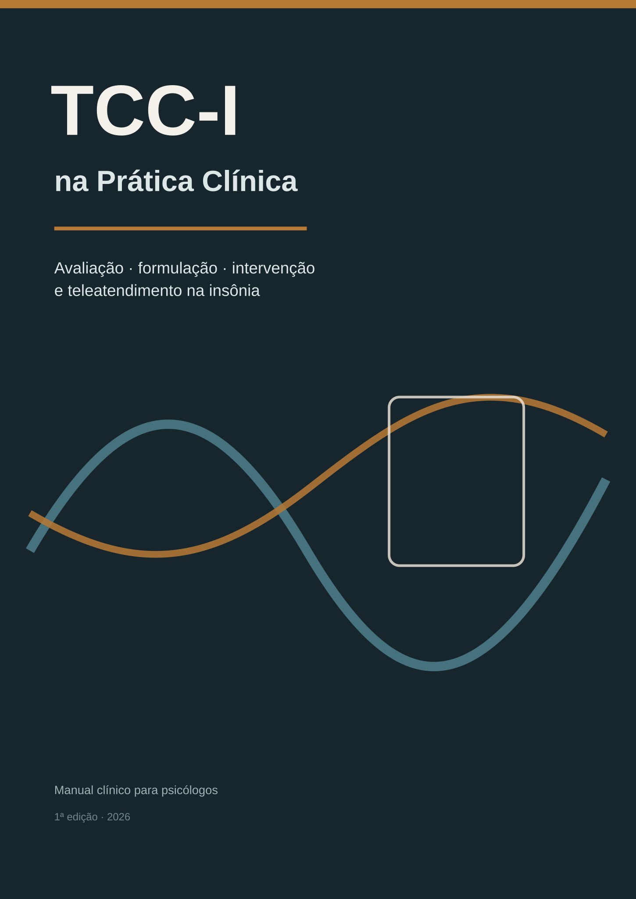

Rota essencial
Arquitetura clínica em percurso condensado.
Iniciar rota
Livro clínico de Terapia Cognitivo-Comportamental para Insônia, com foco em avaliação, formulação, intervenção, teleatendimento e raciocínio clínico.
Arquitetura clínica em percurso condensado.
Iniciar rotaLeitura sequencial dos 28 capítulos com exercícios.
Iniciar rotaFormulação, decisões, monitoramento e revisão.
Iniciar rotaO sono como sistema regulado → Modelos contemporâneos de manutenção
Abrir parteEntrevista clínica do sono → Formulação de caso em TCC-I
Abrir partePsicoeducação que muda comportamento → Higiene do sono no lugar certo
Abrir partePlanejamento terapêutico → Prevenção de recaída
Abrir parteTCC-I por videoconferência e recursos digitais
Abrir parteComorbidades e contextos especiais → Quando o tratamento não está funcionando
Abrir parteDo protocolo ao raciocínio clínico
Abrir parte